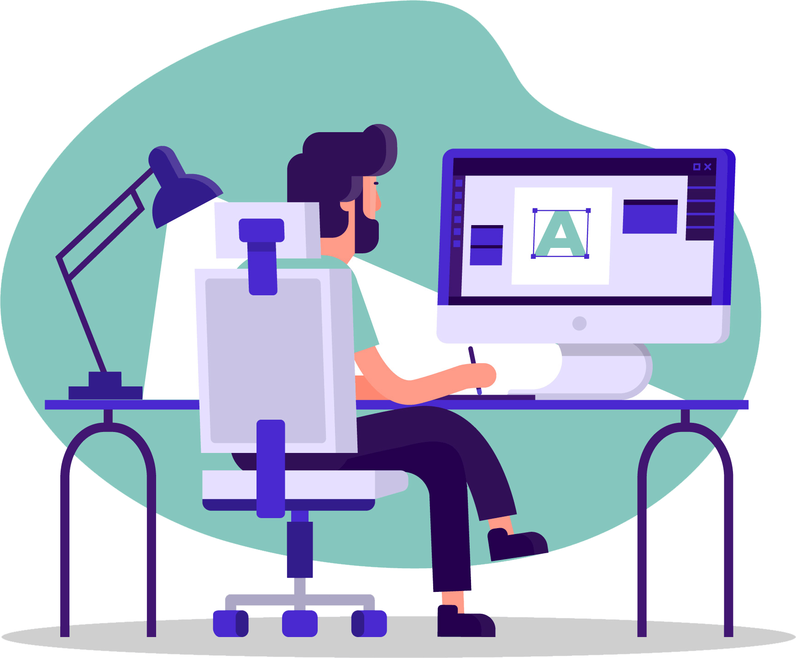

a game designer

Nama saya Ari Syuhada, saya mahasiswa S1 Teknik Informatika, Fakultas Ilmu Komputer, Universitar Brawijaya. Umur saya 18 tahun. Saya adalah seorang Game Designer dari sebuah studio game Indie bernama RushHourDream.
Saya menempuh pendidikan dasar pada tahun 2007 di SDN 2 Kotakan hingga pada tahun 2012. Pada tahun 2013 saya melanjutkan sekolah saya di SMPN 1 Situbondo hingga tahun 2015. Lalu dilanjutkan dengan pendidikan menengah atas di SMAN 1 Situbondo, dari tahun 2016 hingga 2019. Saat ini saya menempuh pendidikan di Universitas Brawijaya, jurusan Teknik Informatika.

Pada saat saya SMA, saya mengikuti ekstrakurikuler yang bernama SCaN IT, yaitu sebuah ekstrakurikuler yang menadahi para siswa nya dalam mempelajari ilmu komputer. Dari saat itu saya dan teman teman saya mulai membentuk tim Game Developer yang bernama RushHourDream. Hingga saat ini, karya kami berupa game Mobile, dimana sebagian besar berupa game edukasi.

Saya handal dalam menganalisa sebuah aplikasi atau game, pengembangan ide dan fitur aplikasi atau game, dan mengkualifikasikan suatu sistem. Selain kemampuan saya sebagai Designer, saya dapat membuat program komputer dengan bahasa Java atau Python. Saya juga memiliki keahlian dalam desain multimedia.